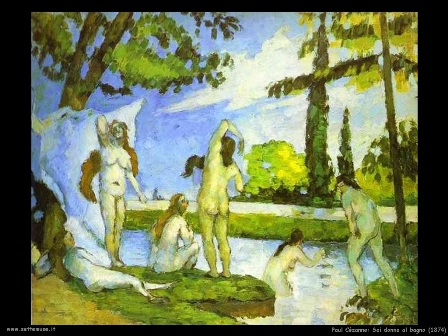
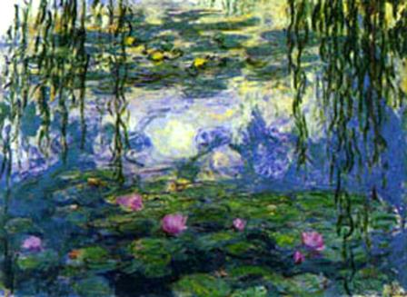

Ambientandoli in periodo vittoriano, ho parlato poco tempo fa di certi singolari avvelenamenti il cui colpevole era il verde di Parigi.
Forse val la pena di conoscere meglio questo interessante pigmento inorganico, che non è solo servito ad avvelenare la gente, ma è stato molto più utile per rasserenarne lo spirito! Impossibile? Seguitemi...
Chimicamente questo composto colorante è un sale di rame e sappiamo che quasi tutti i sali di rame o sono azzurri o sono verdi. Un pigmento per essere utilizzabile deve essere del tutto insolubile in acqua e per quanto possibile inalterabile nel tempo, quindi in pratica i sali di rame effettivamente adatti allo scopo sono molto pochi.
La reale composizione di questo sale doppio non è sempre esattamente definita poichè può variare leggermente a seconda del metodo di preparazione, ma si assume che corrisponda alla formula 3Cu3(AsO3)2.Cu(C2H3O2)2, ovvero tre molecole di arsenito legate ad una molecola di acetato di rame.
Non è un colorante antichissimo (nemmeno rinascimentale per intenderci), ma fu inventato verso la fine del '700; il suo successo fu però rapido e divenne diffusissimo nella pittura ottocentesca per la sua tonalità brillante e nello stesso tempo naturale.
Si otteneva a quei tempi esponendo lastre di rame a vapori di aceto (CH3-COOH) ed all'azione dell'anidride arseniosa As2O3, oppure con altri metodi, ma ottenendo alla fine una bella polvere verde dai numerosi nomi più o meno di fantasia; eccone alcuni:
verde di Parigi, verde di Schweinfurt, verde imperiale, verde di Vienna, verde pappagallo, verde smeraldo, verde mitis, verde di Lipsia, verde patentato, verde nuovo... credo che bastino! Il fatto che siano così numerosi è chiara testimonianza del suo grande successo commerciale.
Molto simile al verde di Parigi è il verde di Scheele, al quale manca però la componente acetica ed è pertanto arsenito di rame CuHAsO3; anch'esso non ha sempre una ben definita composizione poichè i rapporti tra arsenico, rame e molecole d'acqua legate dipendono dal metodo di preparazione.
Sono tutti composti molto velenosi, ed è curioso il fatto che il verde di Parigi prende il nome dal fatto che nel secolo romantico veniva impiegato per la derattizzazione delle suggestive fogne di Parigi (consiglio molto di andarle a visitare!).
Altro impiego poco conosciuto di questo colorante fu la lotta contro la zanzara anofele durante la bonifica dell'Agro Pontino negli anni '30, quando la malaria era una malattia endemica diffusissima in tanti parti d'Italia.
In ambito artistico era uno dei verdi preferiti da Cezanne, Van Gogh e altri artisti di quella splendida età pittorica che fu l'impressionismo.
Si dice addirittura che le malattie di questi due pittori (ma chissà di quanti altri!) derivassero anche da un cronico avvelenamento da arsenico e mercurio (quest'ultimo sotto forma del rosso vermiglione, HgS).
Alla fine i tempi sono cambiati, ha prevalso il buon senso ed il verde di Parigi è stato totalmente bandito dall'uso e sostituito da pigmenti meno pericolosi, fino ad arrivare a metà del secolo scorso alle ftalocianine di rame dalle varie tonalità e del tutto inalterabili nel tempo (ved. nel blog un po' più indietro) .
Cercare oggi in commercio il verde di Parigi è naturalmente un'impresa impossibile. però se proprio lo volete vedere eccolo qui sotto:

Lo accompagno volentieri con un quadro di Cezanne e uno di Monet, nei quali, ci giurerei, l'acetoarsenito di rame è il protagonista fondamentale. E poi dicono che la Chimica e l'Arte non vanno d'accordo...


2 commenti